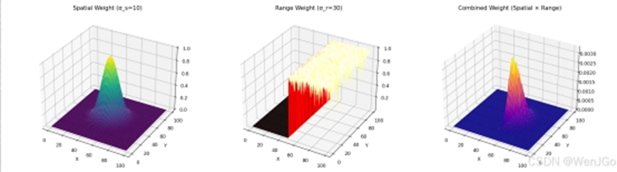

4 边缘保留滤波
边缘保留滤波是计算机视觉和图像处理中的高级技术，旨在在平滑图像、去除噪声的同时尽可能保留图像的边缘和结构信息。边缘保留滤波是一种在图像去噪过程中优先保留边缘信息的滤波技术。传统平滑滤波（如均值滤波和高斯滤波）通过对像素值进行平均或加权平均来减少噪声，但往往会导致边缘模糊。而边缘保留滤波通过引入像素值差异、空间距离或其他结构信息，区分边缘和非边缘区域，从而在去噪的同时保留图像的关键特征。
边缘是图像中像素值发生显著变化的区域，通常对应于物体的边界或纹理。边缘信息在计算机视觉任务（如目标检测、图像分割）中至关重要。所以，在去除噪声（如高斯噪声、椒盐噪声）的同时保留边缘和细节，避免过度平滑，保持图像的结构完整性，就显得很重要，这就是边缘保留滤波的主要目标。
边缘保留滤波本质仍是空域滤波，但是卷积核权值计算比较复杂，根据其依赖邻域或全局来分为两大类： - 局部滤波：如双边滤波和导向滤波，基于局部邻域的像素值和空间信息进行处理。 - 全局滤波：如非局部均值滤波，考虑图像中更广泛的区域，利用相似性进行去噪。
本小节将详细介绍三种重要的边缘保留滤波方法：双边滤波、导向滤波和非局部均值滤波。
4.1 双边滤波
4.1.1 基本原理
双边滤波（Bilateral Filtering）是一种非线性滤波方法，结合了空间距离和像素值差异的权重进行平滑。它通过两个高斯函数分别对空间距离和像素强度差异进行加权，确保靠近中心像素且像素值相似的像素对结果贡献更大，从而保留边缘。
双边滤波的数学表达式为：
[ O(x, y) = _{(i,j) S} I(i, j) G_s(| (i,j) - (x,y) |, _s) G_r(|I(i,j) - I(x,y)|, _r) ]
其中： - (I(x, y))：输入图像像素值。 - (O(x, y))：输出图像像素值。 - (S)：滤波核覆盖的邻域。 - (G_s)：空间高斯函数，基于像素间欧几里得距离，标准差为 (_s)。 - (G_r)：像素值差异高斯函数，基于像素强度差，标准差为 (_r)。 - (W_p)：归一化因子，确保权重和为 1。  双边滤波的特点： （1）保留边缘信息 传统的线性滤波（如均值滤波、高斯滤波）在去噪的同时会导致图像模糊，包括边缘的模糊。而双边滤波通过结合空间权重和颜色权重，使得相似颜色的像素被平滑，而边缘的不同颜色像素得以保留，从而避免边缘被模糊化。例如，在处理人脸图像时，可以去除噪声但仍保持五官的清晰度。 （2）空间权重 + 颜色权重 双边滤波的计算依赖两个权重，空间权重（几何权重）基于像素之间的物理距离，决定了相邻像素的影响程度，通常使用高斯函数计算，由参数\sigma_s控制，值越大，远处的像素影响越大。作用类似于高斯模糊，限制远距离像素的影响。 颜色权重（强度权重）基于像素灰度值（或颜色）之间的相似性，决定了颜色接近的像素影响程度，通常使用高斯函数计算，颜色相近的像素权重较高，差异较大的像素影响较小，从而防止边缘模糊。由参数\sigma_r控制，值越大，即使颜色相差较大仍然会被平滑。最终的权重由两者的乘积决定： （3）去噪的同时保持细节 普通均值滤波会平均周围像素的值，导致细节丢失，图像变模糊。 双边滤波只平滑相似颜色的像素，不同颜色的像素（如边缘）权重较低，因此边缘能得到保留。 （4）计算量较大 由于每个像素的计算都需要遍历其邻域并计算权重，双边滤波的计算量远大于普通高斯滤波。 计算复杂度为 O(N^2)，比高斯滤波的 O(1) 复杂得多，因此在大图像上处理较慢。 改进方法： 高效双边滤波（Fast Bilateral Filter）：使用降采样和快速卷积优化计算。 导向滤波（Guided Filter）：计算复杂度降低至 O(1)，且效果接近双边滤波。 （5） 参数选择对效果影响很大 - 邻域大小d：d太小（如 5）,影响范围小，平滑效果较弱，但边缘保持较好；d太大（如 15+）：影响范围大，平滑更强，但可能损失更多细节。 - 颜色标准差\sigma_r）：\sigma_r太小（如 20），只考虑颜色非常相近的像素，保留更多细节，但去噪效果较差；\sigma_r太大（如 100），即使颜色差距较大也会平滑，去噪更强，但可能导致色彩丢失。 - 空间标准差\sigma_s：\sigma_s太小（如 10），仅影响局部区域，细节保留较好；\sigma_s太大（如 100）：影响更大范围，模糊效果更强。
4.1.2 实现方法
以下是基于 Python 和 NumPy 的双边滤波实现：
import numpy as np
def bilateral_filter(image, kernel_size=5, sigma_s=10.0, sigma_r=30.0):
height, width = image.shape
k = kernel_size // 2
output = np.zeros_like(image, dtype=np.float64)
# 生成空间高斯核
gaussian_s = np.zeros((kernel_size, kernel_size))
for i in range(-k, k+1):
for j in range(-k, k+1):
gaussian_s[i+k, j+k] = np.exp(-(i**2 + j**2) / (2 * sigma_s**2))
# 遍历图像
for x in range(k, height - k):
for y in range(k, width - k):
weight_sum = 0.0
pixel_sum = 0.0
center_val = image[x, y]
# 计算邻域权重
for i in range(-k, k+1):
for j in range(-k, k+1):
neighbor_val = image[x+i, y+j]
# 像素值差异高斯权重
gaussian_r = np.exp(-((center_val - neighbor_val)**2) / (2 * sigma_r**2))
weight = gaussian_s[i+k, j+k] * gaussian_r
pixel_sum += weight * neighbor_val
weight_sum += weight
output[x, y] = pixel_sum / weight_sum if weight_sum > 0 else center_val
return output.astype(np.uint8)4.1.3 优点与缺点
（1）优点： - 有效保留边缘，避免传统滤波的模糊问题。 - 对高斯噪声和轻微椒盐噪声有较好的去噪效果。 - 参数 (_s) 和 (_r) 可调，灵活性高。
（2）缺点： - 计算复杂度较高（非线性操作）。 - 对强椒盐噪声的处理效果有限。 - 参数选择需谨慎，过大的 (_r) 可能导致过度平滑。
4.2 导向滤波
4.2.1 基本原理
导向滤波（Guided Filtering）是一种基于局部线性模型的边缘保留滤波方法，利用导向图像（通常是输入图像本身或另一幅图像）指导滤波过程。它假设输出图像在局部区域内与导向图像呈线性关系，从而在平滑的同时保留边缘。
导向滤波的数学模型为：
[ O(x, y) = a_k I(x, y) + b_k, (x, y) _k ]
其中： - (O(x, y))：输出像素值。 - (I(x, y))：导向图像像素值。 - (_k)：以像素 (k) 为中心的局部窗口。 - (a_k, b_k)：局部线性系数，通过最小化以下代价函数计算：
[ E(a_k, b_k) = _{(x,y) _k} ( (a_k I(x, y) + b_k - P(x, y))^2 + a_k^2 ) ]
其中，(P(x, y)) 是输入图像像素值，() 是正则化参数，防止 (a_k) 过大。
系数 (a_k) 和 (b_k) 的解为：
[ a_k = , b_k = {P}_k - a_k {I}_k ]
其中，(_k(I, P)) 和 (_k(I)) 分别是导向图像在窗口内的协方差和方差，({I}_k) 和 ({P}_k) 是输入图像和导向图像的均值。
最终输出为：
[ O(x, y) = {a}(x, y) I(x, y) + {b}(x, y) ]
4.2.2 实现方法
以下是基于 Python 和 NumPy 的导向滤波实现：
import numpy as np
import cv2
def guided_filter(I, P, r=5, eps=0.01):
height, width = I.shape
output = np.zeros_like(P, dtype=np.float64)
# 计算均值和方差
mean_I = cv2.boxFilter(I, -1, (r, r))
mean_P = cv2.boxFilter(P, -1, (r, r))
mean_IP = cv2.boxFilter(I * P, -1, (r, r))
cov_IP = mean_IP - mean_I * mean_P
mean_II = cv2.boxFilter(I * I, -1, (r, r))
var_I = mean_II - mean_I * mean_I
# 计算系数 a 和 b
a = cov_IP / (var_I + eps)
b = mean_P - a * mean_I
# 计算输出均值
mean_a = cv2.boxFilter(a, -1, (r, r))
mean_b = cv2.boxFilter(b, -1, (r, r))
# 最终输出
output = mean_a * I + mean_b
return output.astype(np.uint8)4.2.3 优点与缺点
（1）优点： - 计算效率高，基于均值滤波实现，复杂度为 (O(1))（与窗口大小无关）。 - 边缘保留能力强，适合复杂纹理图像。 - 可使用不同导向图像，灵活性高。
（2）缺点： - 对强噪声的鲁棒性稍逊于非局部均值滤波。 - 参数 () 和窗口大小需仔细调整。
4.3 非局部均值滤波
4.3.1 基本原理
非局部均值滤波（Non-Local Means, NLM）是一种全局滤波方法，利用图像中所有像素的相似性进行去噪。它基于图像的块相似性（patch similarity），通过比较像素邻域的相似性来分配权重，适用于去除高斯噪声。
NLM 的数学表达式为：
[ O(x) = _{y } w(x, y) I(y) ]
其中： - (I(x))：输入图像像素值。 - (w(x, y))：权重，基于像素 (x) 和 (y) 的邻域相似性。 - (W(x) = _{y } w(x, y))：归一化因子。 - ()：整个图像或搜索窗口。
权重 (w(x, y)) 通常基于高斯加权距离：
[ w(x, y) = ( - ) ]
其中，(P(x), P(y)) 是以像素为中心点的邻域块，(||^2_{G_}) 是加权欧几里得距离，(h) 控制滤波强度。
4.3.2 实现方法
以下是基于 Python 和 NumPy 的非局部均值滤波实现：
import numpy as np
from scipy.ndimage import convolve
def non_local_means(image, patch_size=3, search_size=7, h=30.0):
height, width = image.shape
k = patch_size // 2
s = search_size // 2
output = np.zeros_like(image, dtype=np.float64)
pad_image = np.pad(image, k, mode='reflect')
# 遍历图像
for x in range(height):
for y in range(width):
center_patch = pad_image[x:x+2*k+1, y:y+2*k+1]
weight_sum = 0.0
pixel_sum = 0.0
# 搜索窗口
for i in range(max(0, x-s), min(height, x+s+1)):
for j in range(max(0, y-s), min(width, y+s+1)):
neighbor_patch = pad_image[i:i+2*k+1, j:j+2*k+1]
# 计算邻域距离
distance = np.sum((center_patch - neighbor_patch)**2)
weight = np.exp(-distance / (h**2))
pixel_sum += weight * image[i, j]
weight_sum += weight
output[x, y] = pixel_sum / weight_sum if weight_sum > 0 else image[x, y]
return output.astype(np.uint8)4.3.3 优点与缺点
（1）优点： - 利用全局相似性，对高斯噪声的去噪效果极佳。 - 边缘和细节保留能力强。 - 适用于复杂纹理图像。
（2）缺点： - 计算复杂度高（搜索整个图像或大窗口）。 - 参数 (h) 和搜索窗口大小需仔细调优。 - 对椒盐噪声效果有限。
4.3.4 三种滤波方法的比较
（1）数学特性
- 双边滤波：局部非线性滤波，结合空间和像素值差异，边缘保留能力较强。
- 导向滤波：局部线性滤波，基于导向图像的线性模型，计算高效。
- 非局部均值滤波：全局非线性滤波，基于块相似性，适合复杂纹理。
（2）噪声处理能力
| 滤波方法 | 高斯噪声 | 椒盐噪声 | 边缘保留 | 计算复杂度 |
|---|---|---|---|---|
| 双边滤波 | 良好 | 一般 | 良好 | 中等 |
| 导向滤波 | 良好 | 一般 | 优秀 | 低 |
| 非局部均值滤波 | 优秀 | 较差 | 优秀 | 高 |
（3）应用选择
- 双边滤波：适合快速去噪和边缘保留，参数调整灵活。
- 导向滤波：适合需要高效计算的场景，如实时处理。
- 非局部均值滤波：适合高质量去噪，特别是有复杂纹理的图像。
（4）实际实现与效果分析
以下是一个完整的 Python 示例，展示如何对含噪图像应用三种滤波方法并比较效果：
import cv2
import numpy as np
import matplotlib.pyplot as plt
# 加载图像
image = cv2.imread('image.jpg', cv2.IMREAD_GRAYSCALE)
# 添加高斯噪声
noisy_image = image + np.random.normal(0, 20, image.shape).astype(np.uint8)
# 应用三种滤波
bilateral_filtered = bilateral_filter(noisy_image, kernel_size=5, sigma_s=10, sigma_r=30)
guided_filtered = guided_filter(noisy_image, noisy_image, r=5, eps=0.01)
nlm_filtered = non_local_means(noisy_image, patch_size=3, search_size=7, h=30)
# 显示结果
plt.figure(figsize=(15, 10))
plt.subplot(231), plt.imshow(image, cmap='gray'), plt.title('Original Image')
plt.subplot(232), plt.imshow(noisy_image, cmap='gray'), plt.title('Noisy Image')
plt.subplot(233), plt.imshow(bilateral_filtered, cmap='gray'), plt.title('Bilateral Filter')
plt.subplot(234), plt.imshow(guided_filtered, cmap='gray'), plt.title('Guided Filter')
plt.subplot(235), plt.imshow(nlm_filtered, cmap='gray'), plt.title('Non-Local Means')
plt.show()（5）效果分析
- 双边滤波：对高斯噪声有较好去噪效果，边缘保留良好，但可能保留部分噪声。
- 导向滤波：去噪效果与双边滤波相当，边缘保留更清晰，计算效率高。
- 非局部均值滤波：去噪效果最佳，细节保留优秀，但计算时间长。